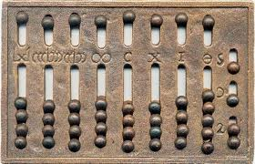

<html>
<head>
	<meta charset="utf-8">
	<title> Ábaco </title>
</head>
</html>

<body style="padding:0; margin:0; background-color:#FFFFFF; display:flex; align-items:center ; justify-content:center;">
	<div style="background-color:#4682B4; width: 300px; height: 100%;float: left; width: 1000px;">
			<center>
					<hr style= "width:300px; height:5px; background-color: #00008B; border: none;">
					<font color="#FFFFFF" face="Perpetua","Open Sans" size="20px">
						<b>Á b a c o</b>
					</font>
					<hr style= "width:300px; height:5px; background-color: #00008B; border: none;">
			</center>
		<p>
		<center>
			<table>
				<tr>
					<td>
						
					</td>
				</tr>
				<tr>
					<td>
						<font face="Courier New" color="#FFFFFF" size="5px">
							<center><b>(2300 a.C)</b></center>
							<p>
						</font>	
					</td>
				</tr>
			</table>
			<br><br><br>
			<table>
				<tr>
					<td>
						<font color="#FFFFFF" face="Perpetua","Open Sans" size="5px">	
								<ul>
									<li> Criado pela necessidade de realizar cálculos matemáticos </li>
									<p>
									<li> Um dos primeiros dispositivos de cálculo, utilizado na <br> Mesopotâmia e
										outras civilizações antigas </li>
									<p>
									<li> Consistia em uma estrutura com contas movíveis para realizar <br> operações
										aritméticas básicas. </li>
								</ul>
						<font>
					</td>
				</tr>
			</table>
		</center>
		<br>
		<center>
			<table>
					<tr>
						<td>
							<a href="index.html">
								<button style="width: 100px; height: 50px; color: #FFFFFF; background-color: #00008B; border-radius: 16px; ;">
									<
								</button>
							</a>
						</td>
						<td>
							<a href="index.html">
								<button style="width: 100px; height: 50px; color: #FFFFFF; background-color: #00008B; border-radius: 16px; ;">
									INÍCIO
								</button>
							</a>
						<td>
							<a href="Página 2.html">
								<button style="width: 100px; height: 50px; color: #FFFFFF; background-color: #00008B; border-radius: 16px;">
									>
								</button>
							</a>
						</td>
					</tr>
			</table>
		</center>	
	</div>
</body>
</html>
